Muhammad Zoya
Student | Web Programmer
About Me
Muhammad Zoya Al-dzakwan Deskripsi Diri Halo, nama saya Muhammad Zoya Al-dzakwan. Saya seorang siswa SMKN 1 Muara Teweh, jurusan Multimedia. Saya lahir di Muara Teweh pada tanggal 10 Agustus 2004. Saya adalah anak pertama dari dua bersaudara. Saya adalah orang yang ramah, suka bergaul, dan mudah beradaptasi. Saya juga memiliki rasa ingin tahu yang tinggi dan selalu ingin belajar hal-hal baru. Saya memiliki minat yang besar di bidang multimedia, terutama desain grafis dan video editing. Saya bercita-cita untuk menjadi seorang desainer grafis profesional. Saya ingin membuat karya-karya yang bisa menginspirasi orang lain. Kesan & Pesan Saya sangat bersyukur bisa menjadi bagian dari SMKN 1 Muara Teweh. Saya banyak belajar dan berkembang selama bersekolah di sini. Saya mendapatkan banyak ilmu dan pengalaman yang berharga. Saya berterima kasih kepada semua guru dan staf yang telah mendidik dan membimbing saya. Saya juga berterima kasih kepada teman-teman yang telah memberikan dukungan dan kebersamaan. Saya akan selalu mengingat masa-masa indah selama sekolah di SMKN 1 Muara Teweh. Saya akan terus berusaha untuk menjadi orang yang lebih baik. Pengalaman Menarik Salah satu pengalaman menarik saya selama sekolah di SMKN 1 Muara Teweh adalah ketika saya mengikuti lomba desain grafis tingkat provinsi. Saya berhasil meraih juara pertama dalam lomba tersebut. Ini adalah pengalaman yang sangat membanggakan bagi saya. Selain itu, saya juga pernah mengikuti pertukaran pelajar ke Jepang. Ini adalah pengalaman yang sangat berharga bagi saya. Saya bisa belajar budaya dan bahasa Jepang secara langsung. Harapan Saya berharap SMKN 1 Muara Teweh akan terus maju dan berkembang. Saya juga berharap agar semua siswa SMKN 1 Muara Teweh bisa meraih cita-citanya.
Demikianlah contoh cara mendeskripsikan diri atas nama Muhammad Zoya Al-dzakwan. Anda bisa menambahkan atau mengubah informasi yang ada sesuai dengan keinginan Anda. Berikut adalah beberapa tips untuk menulis deskripsi diri yang menarik: Mulailah dengan memperkenalkan diri secara singkat, termasuk nama, tanggal lahir, dan tempat tinggal. Jelaskan tentang kepribadian Anda, minat Anda, dan cita-cita Anda. Berikan contoh pengalaman menarik yang Anda miliki. Akhiri dengan harapan Anda untuk masa depan. Semoga membantu!
Gallery
 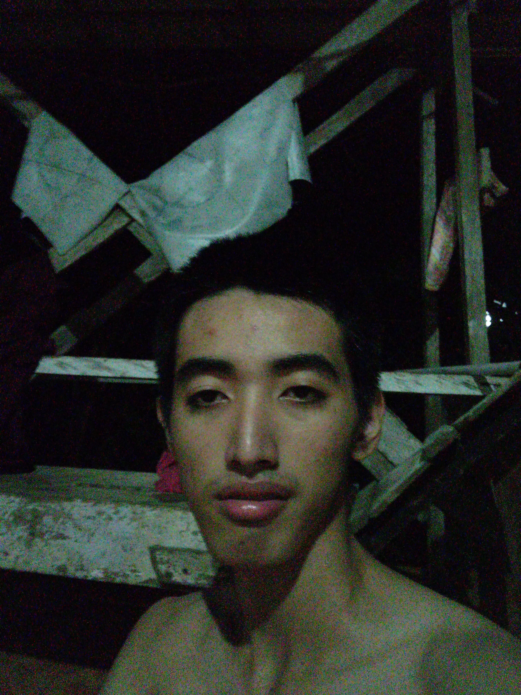
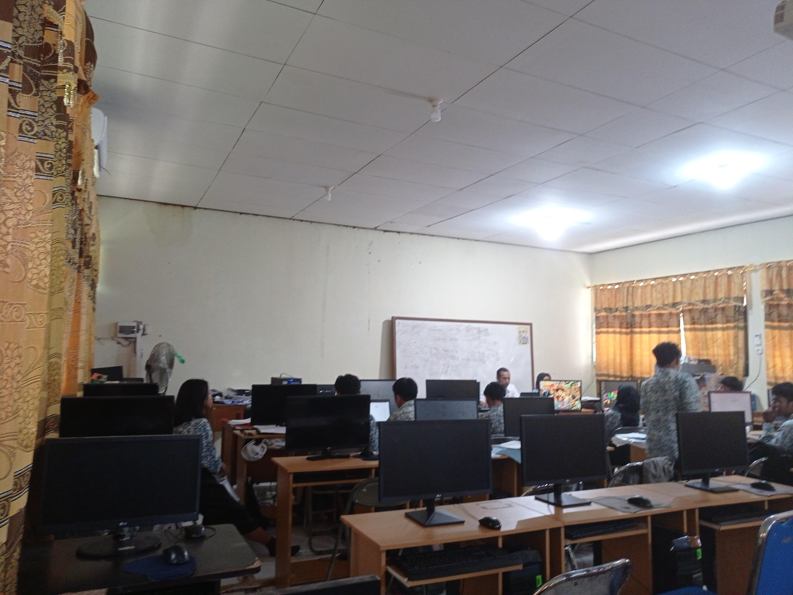
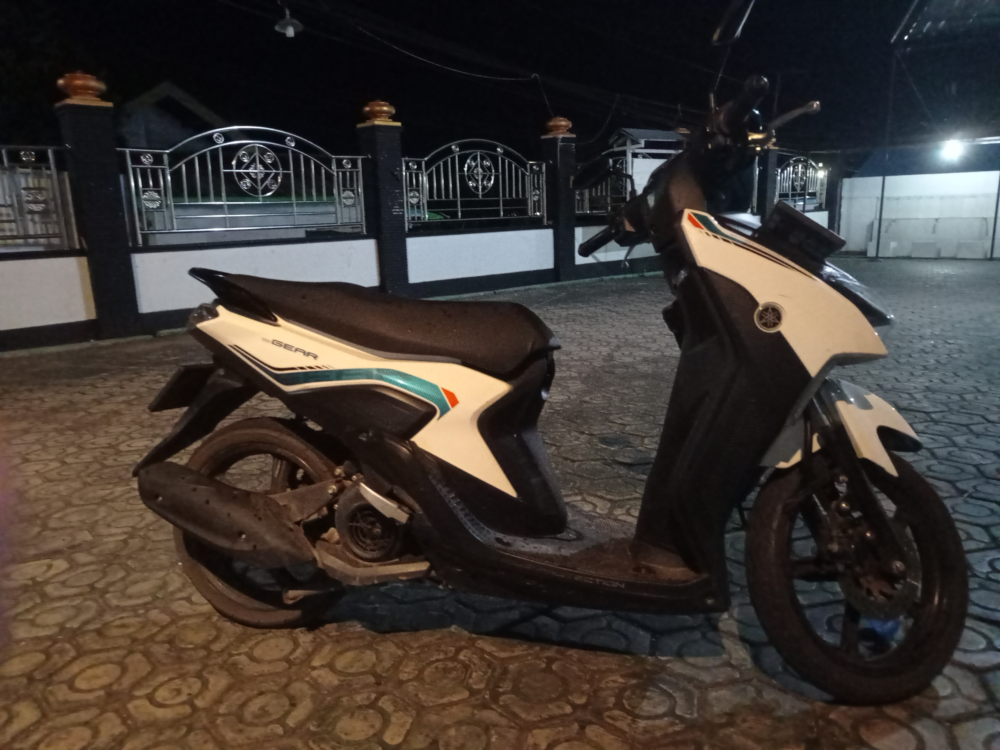
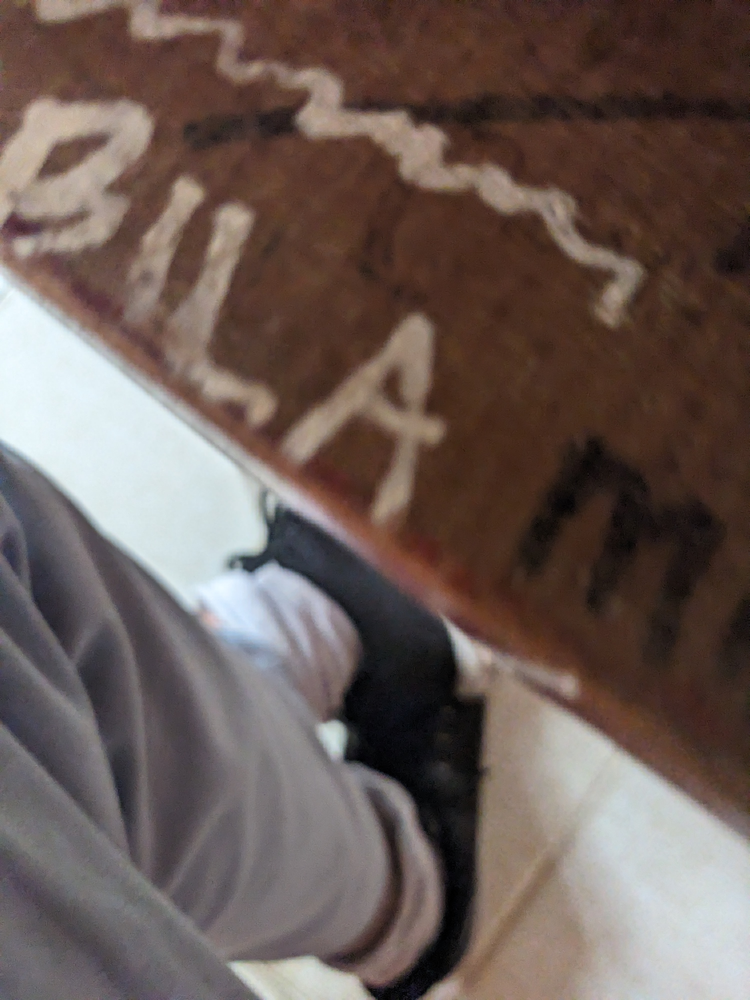
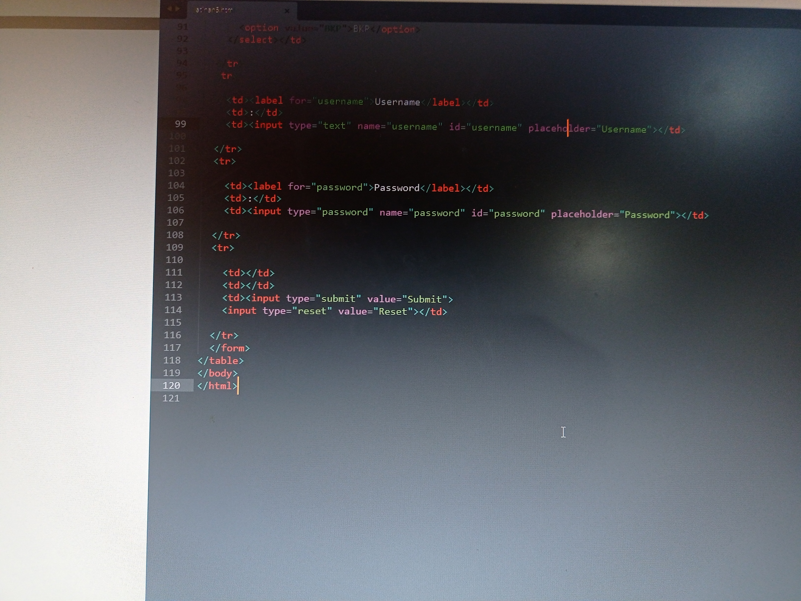
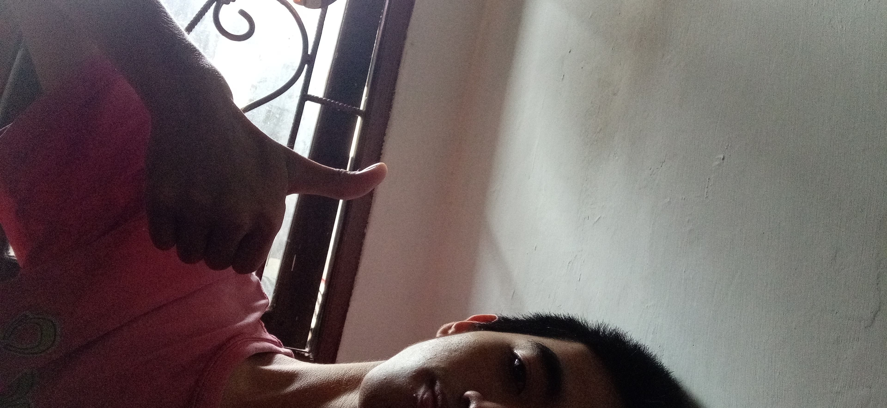
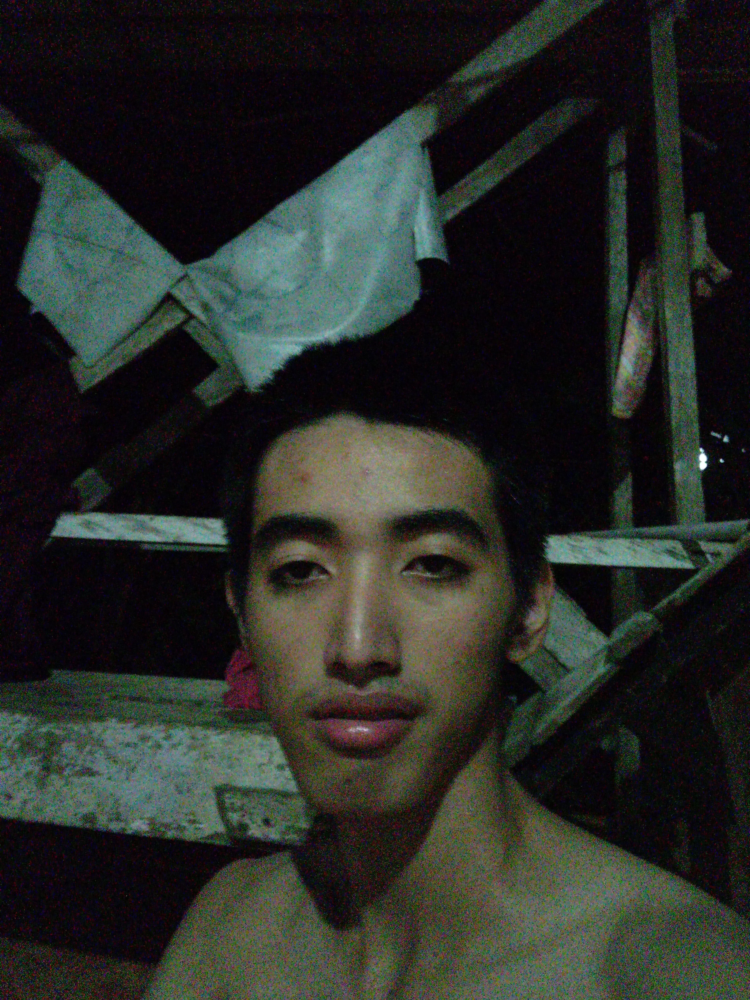
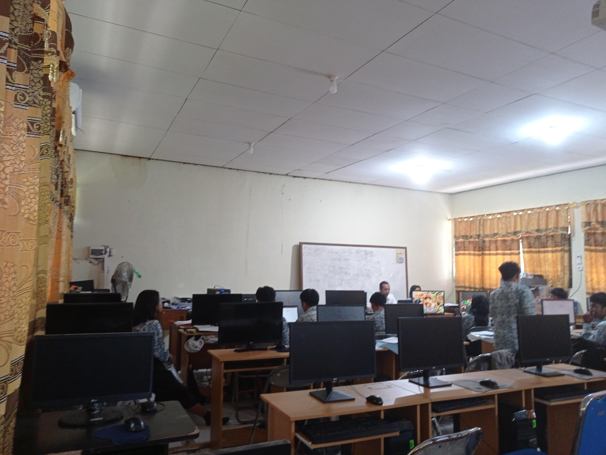
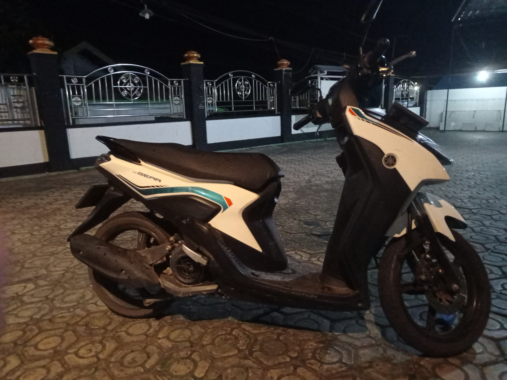
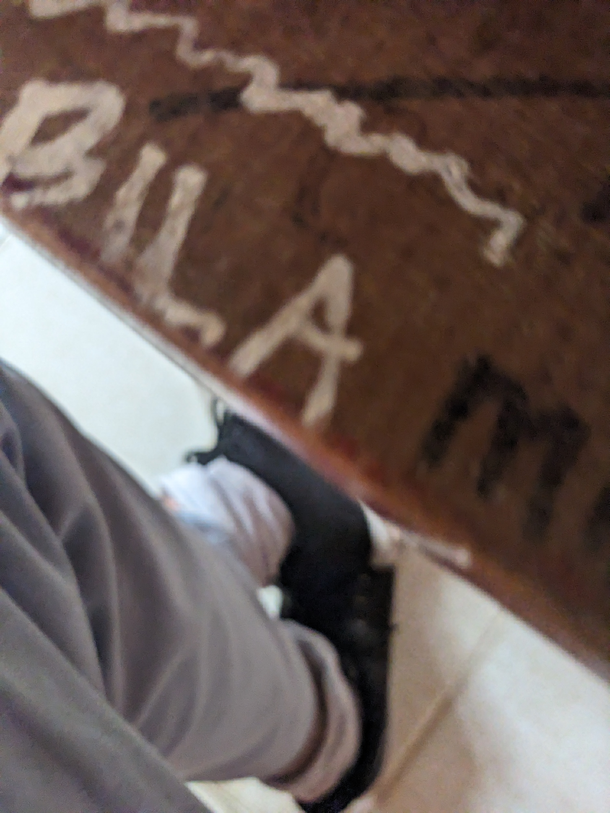
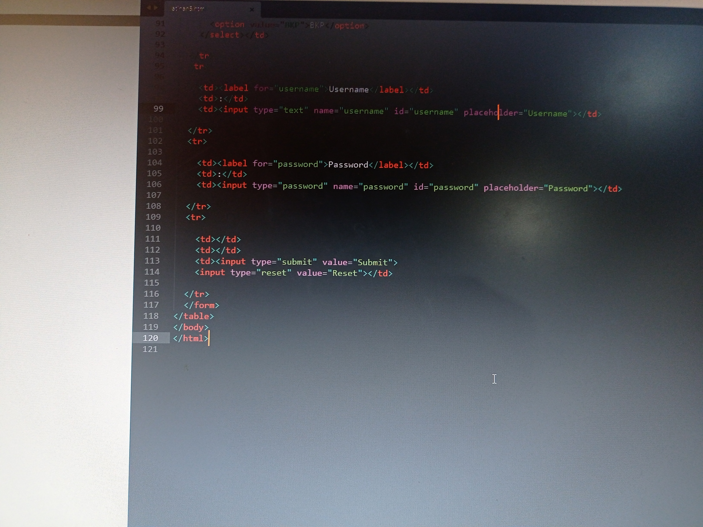
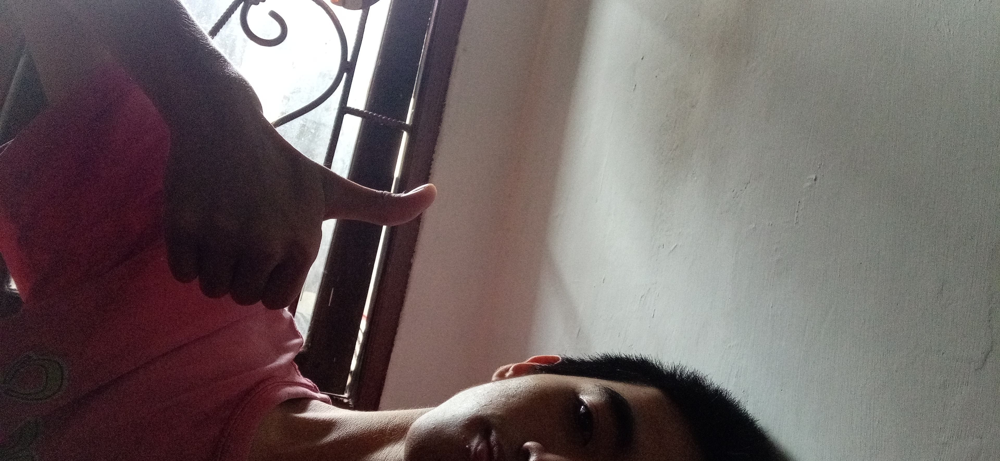